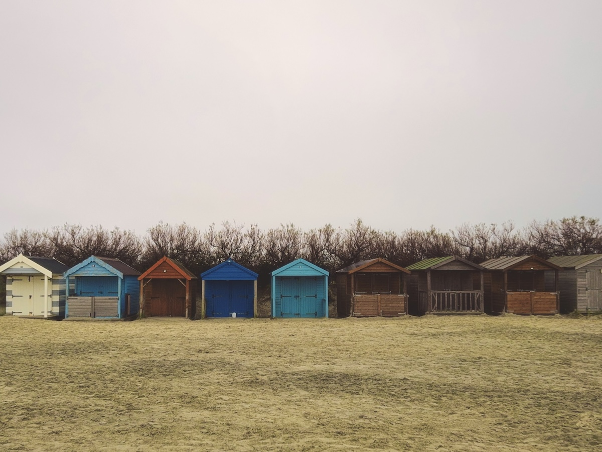

I am currently working as Head of Product, Digital Screening for NHS England, where we are building a new technology platform for the 10 million people who are screened each year, and the NHS staff who deliver these services.
You can read more about me, browse my archive, subscribe to my blog using RSS or connect via LinkedIn.
Thanks for stopping by!
